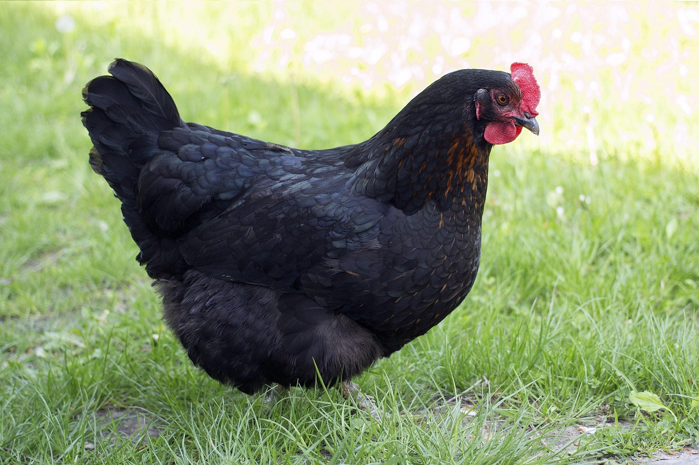

At Ruckus Ranch, we raise egg laying chickens. We have two breeds: Australorps and Cochins. Currently we have 7 chickens and average 6-7 eggs per day. This keeps our family of four well stocked in eggs and cuts cost at the grocery store. At times, we have an abundance of eggs and are even able to share the wealth with neighbors and family.
We do not have the fancy aesthetic coop for our chickens, nor have we named them (except for our two favorites!). We have a basic coop made of wood and chicken wire attached to our shed. We use a five gallon bucket with gravity feed scoops for watering and a basic feeder for feed. They have a large roosting bar in the corner. We do not use laying boxes as the girls just lay in the corner where they formed their own nest. The earth beneath the coop is already sand, so we do not utilize bedding of any kind which makes clean up easy and efficient. It is a very utilitarian set up, really.
Important Information About Us!